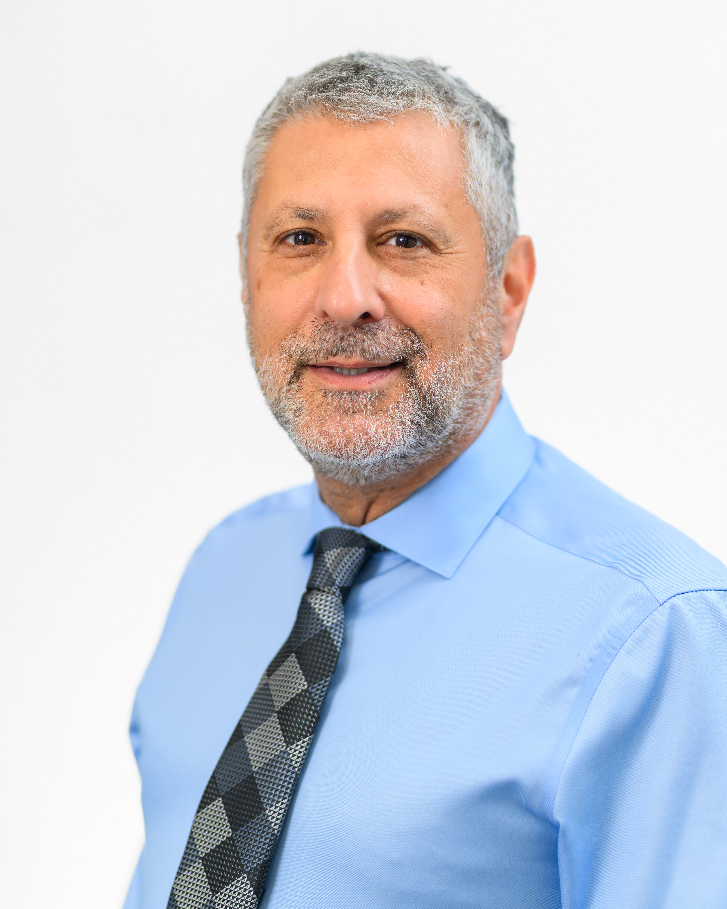

You have questions. We have calm, clear answers.
If dental fear has kept you from the chair, you're not alone, and you're not a "difficult" patient. We put together this page so you can get every question answered before you ever have to pick up the phone.
- Have dental anxiety, phobia, or a history of dental trauma
- Have a sensitive gag reflex or low pain tolerance
- Need multiple procedures and want to minimize visits
- Care for someone with special needs or mobility challenges
- Have avoided the dentist for years and are ready to try again
About Sedation Dentistry
It depends on which sedation level you choose. With nitrous oxide, you're awake but very relaxed. With oral sedation, you're awake but drowsy and usually won't remember much. With IV sedation (sleep dentistry), you're in a deep, sleep-like state and most patients say it felt exactly like sleeping through it. With general anesthesia, you are fully asleep. We'll help you pick the level that matches what you're hoping for.
Yes. "Sleep dentistry" is the common name for IV sedation, which is the deepest sedation level short of general anesthesia. You won't be technically unconscious, but you will be in a deep, relaxed state and almost certainly won't remember the procedure. We also offer general anesthesia for patients who need to be fully asleep. Learn more about sleep dentistry →
Sedation dentistry uses safe, clinically monitored medication to help you relax, or sleep, during dental treatment. Depending on the level you choose, you may feel mildly calm, deeply drowsy, or completely unaware of the procedure. You always breathe on your own (except under general anesthesia) and a licensed clinician monitors your vital signs throughout.
It's not just for major surgeries. Many patients use sedation for routine cleanings, fillings, or extractions simply because they want a more comfortable experience. Think of it as turning a stressful appointment into something closer to a nap.
We offer four levels so every patient can find the right fit:
- Nitrous oxide (laughing gas) — Inhaled through a small nose mask. Works within minutes, wears off within minutes. You stay awake and drive yourself home.
- Oral conscious sedation — A prescribed pill taken one hour before. You'll be deeply drowsy but able to respond. You'll need a driver.
- IV sedation (sleep dentistry) — Medication delivered into your bloodstream for rapid, precise control. Most patients remember little to nothing. You'll need a driver.
- General anesthesia — Complete unconsciousness for patients who cannot be treated any other way (severe phobia, special needs, certain medical conditions).
Sedation is a great fit if you have any of the following:
- Dental anxiety, phobia, or panic attacks before dental visits
- A history of traumatic dental experiences
- A strong gag reflex that makes treatment difficult
- Sensitive teeth or low pain tolerance
- Special needs, disabilities, or difficulty sitting still
- A long or complex procedure coming up (implants, extractions, root canals)
- Limited time and a desire to complete multiple treatments in one visit
We see patients ages 3 and up, from children who just need a calming boost to adults who haven't been to the dentist in a decade.
Yes, and we mean that sincerely. If you've delayed dental care because of fear or past trauma, you're not alone and you're not a "difficult" patient. An estimated 36% of Americans have dental anxiety, and about 12% avoid dentists entirely. We've heard every version of "I'm embarrassed it's been so long."
We will never rush you, judge you, or minimize what you feel. Our job is to meet you where you are. Many patients come in for a consultation just to talk, no instruments, no pressure, just a conversation about your concerns. Call us for a free 10-minute phone chat first if that feels easier.
We decide together during your consultation, based on:
- How much anxiety you experience (mild, moderate, severe, phobia)
- Your complete medical history and current medications
- The type, complexity, and length of the procedure
- Your personal comfort goals and preferences
Many patients who have never tried sedation start with nitrous oxide and find it's all they need. Others with more significant anxiety benefit from oral or IV sedation. There's no wrong answer, just the right answer for you at this moment.
Safety & Monitoring

Our lead sedation dentist has administered thousands of sedation procedures across all four levels. Our clinical team is trained in emergency response, continuous monitoring protocols, and pediatric sedation. We complete a comprehensive medical review before every procedure and monitor your oxygen levels, heart rate, and blood pressure throughout.
Yes, dental sedation has a strong, decades-long safety record when performed by trained professionals following proper protocols. Here is exactly what we do to keep you safe:
- Complete medical history review before any sedation is recommended
- Continuous vital sign monitoring — pulse oximetry, heart rate, and blood pressure throughout your procedure
- Reversal agents on-site for oral and IV sedation, should they ever be needed
- Emergency oxygen and equipment in every treatment room
- Licensed, trained clinical staff present throughout every sedation procedure
You will never be left alone while under sedation. If you have a specific health concern, share it with us during your consultation and we will address it directly.
Our lead dentist has over 20 years of experience providing all four levels of dental sedation to patients across Delaware. Our clinical team holds specialized training in:
- Oral and IV sedation administration and monitoring
- Pediatric sedation protocols
- Emergency response and airway management
- Continuous vital sign monitoring (pulse oximetry, capnography)
We perform sedation procedures regularly, which means our protocols are practiced and our team is experienced, not just trained on paper.
Yes. We provide sedation for children starting at age 3. Nitrous oxide (laughing gas) is by far the most common and safest option for children. It is inhaled through a nose mask, takes effect in minutes, and wears off completely within minutes of removal, with no lingering effects.
Before any pediatric sedation, we complete a full health history review and discuss options with parents in detail. We use age-appropriate dosing and follow strict pediatric safety protocols. Your child's comfort and safety are our first priority.
Please tell us everything. During your consultation, share your complete list of:
- Prescription medications (including blood thinners, antidepressants, blood pressure medications)
- Over-the-counter drugs and sleep aids
- Supplements and herbal remedies
- All medical diagnoses and conditions
Some medications interact with sedation agents, and some health conditions affect which sedation level is appropriate. Our team reviews this information carefully and may consult with your primary care physician if needed. Never stop a prescribed medication without talking to your doctor first.
Adverse events during properly monitored dental sedation are rare, but we are fully prepared for them. Our office is equipped with:
- Reversal medications for oral and IV sedation agents
- Emergency oxygen with delivery equipment
- Automated external defibrillator (AED)
- Emergency medications (epinephrine, diphenhydramine, nitroglycerin)
Our clinical team is trained in emergency protocols and conducts regular drills. We monitor continuously so any change in your condition is caught immediately, long before it becomes an emergency.
What our patients say
I hadn't seen a dentist in 11 years because of fear. With IV sedation, I had three teeth fixed in one visit and I remember almost nothing. I've been back twice since and I'm not scared anymore.
M.T., Newark, DE
They explained every single step before touching me. When they showed me the monitoring equipment and walked me through what would happen, I finally relaxed. It was the first dental visit I didn't dread walking into.
K.R., Bear, DE
My son has sensory sensitivities and has never been able to sit through a cleaning. The nitrous oxide changed everything. He was calm the whole appointment. The staff were patient and clearly experienced with anxious kids.
Parent, Glasgow, DE
Your Appointment
Here is exactly what to expect so there are no surprises:
- Before your appointment: We review your health history and confirm your sedation choice. You receive written instructions (fasting, medications, what to bring, transportation).
- Arrival: Your companion brings you in. Our team greets you, answers any last questions, and makes sure you feel comfortable before anything begins.
- Sedation: We administer your chosen sedation and wait until you reach full comfort. For nitrous oxide this takes minutes. For oral and IV sedation, we take the time needed — we never rush the relaxation phase.
- Treatment: Your procedure is completed while you are relaxed. Your vital signs are monitored continuously throughout. You are never left alone.
- Recovery: You rest at our office until you are ready to leave safely with your companion. We go over your written aftercare instructions together before you go.
- After: We provide a direct number to call with any questions during recovery. We are available.
It depends on which sedation level you choose:
- Nitrous oxide — Fully awake, calm, and comfortable. You can chat with our team the entire time.
- Oral conscious sedation — Deeply drowsy. You can still respond to questions but many patients drift in and out and feel detached from what's happening.
- IV sedation — A sleep-like state. You are not fully conscious, though technically not "asleep." Most patients have no awareness of the procedure.
- General anesthesia — Completely unconscious. No awareness at all during treatment.
We will walk you through exactly what your experience will feel like before your appointment so you know what to expect.
With nitrous oxide, you will remember everything — you were awake and aware the whole time. With oral conscious sedation and IV sedation, most patients remember little to nothing. The sedation creates an amnesic effect, meaning even if you responded to our team during treatment, you likely will not recall it. General anesthesia produces no awareness or memory during treatment at all.
Many patients are genuinely surprised afterward. They expected to feel traumatized and instead feel calm, sometimes even a little disoriented by how easy it was. That is the point.
It depends on your sedation level:
- Nitrous oxide — No food restrictions, though we suggest avoiding a heavy meal right before.
- Oral sedation, IV sedation, general anesthesia — You must fast for typically 6 to 8 hours before your appointment. That means no food, no water, no coffee. This is a safety requirement, not a suggestion.
You will receive clear written fasting instructions at your consultation. Follow them carefully. If you are unsure, call us before your appointment — we would rather clarify than reschedule.
At your consultation, bring or share a complete list of everything you take, including:
- Prescription medications (especially blood thinners, antidepressants, anti-anxiety medications, blood pressure drugs)
- Over-the-counter pain relievers and sleep aids
- Supplements and herbal products
Our team will review your list and advise whether any adjustments are needed. Do not stop a prescribed medication on your own. Any changes should be made in coordination with your prescribing physician.
Costs & Insurance
Coverage varies significantly by plan. Here is a general guide:
- Nitrous oxide — Partially covered by many plans.
- Oral conscious sedation — Sometimes covered when medically necessary; may require pre-authorization.
- IV sedation and general anesthesia — May be covered for specific diagnoses (e.g., severe anxiety, special needs, medical necessity); pre-authorization is typically required.
Our team will verify your insurance benefits before your appointment and give you a clear, written cost estimate before anything is scheduled. No surprises.
Sedation fees are separate from the cost of your dental procedure. As a general guide:
- Nitrous oxide — approximately $75 to $150
- Oral conscious sedation — approximately $200 to $400
- IV sedation — approximately $400 to $800 depending on procedure length
- General anesthesia — varies based on complexity and duration
These are estimates. Your actual cost depends on your procedure, duration, and insurance coverage. We provide a complete written estimate at your consultation, so you know the full picture before committing to anything.
IV sedation (sleep dentistry) typically adds $400 to $800 to your procedure cost, depending on how long the procedure takes. General anesthesia varies based on complexity. Insurance may cover part of the sedation cost, especially when medically necessary. We also offer CareCredit 0% financing so you can spread the cost over several months. You'll receive a full written estimate before committing to anything — no surprise billing.
Yes. IV sedation has a strong, decades-long safety record when performed by trained providers following proper protocols. At Bear Glasgow Dental, a small clip on your finger monitors your oxygen and heart rate throughout the entire procedure. We keep medications on hand that can reverse sedation quickly if ever needed, and our team conducts regular emergency drills. You are never left alone while sedated.
No. For IV sedation and general anesthesia, you must fast for 6 to 8 hours beforehand — no food, no water, no coffee. This is a safety requirement, not a suggestion. You'll receive clear written fasting instructions at your consultation. For nitrous oxide, there are no food restrictions. For oral sedation, lighter restrictions may apply.
Yes. We accept CareCredit, a healthcare credit card that offers 0% interest promotional financing plans. This allows you to spread the cost of your treatment over several months without paying interest. Ask our front desk team about current CareCredit options when you call or visit — we want cost to never be the reason someone delays needed care.
Here is a plain-language summary of who we serve:
- Age: Patients ages 3 and older. Children typically receive nitrous oxide; deeper sedation for minors requires parental consent and additional health screening.
- Location: We serve patients across Delaware. Our office at 1290 Peoples Plaza in Newark, DE is easy to reach from Wilmington, Dover, the beaches, and everywhere in between.
- Medical conditions: Most healthy adults and children qualify for at least one sedation level. Certain conditions (severe cardiovascular disease, respiratory issues, certain allergies) may limit options. This is evaluated individually at your consultation.
- Pregnancy: Elective sedation is generally not recommended during pregnancy. Discuss with your OB and our team if treatment is urgent.
If you are unsure whether you qualify, call us first. A brief conversation is almost always enough to know if we are the right fit.
Aftercare & Recovery
Recovery time depends on the sedation level:
- Nitrous oxide — Fully clears in minutes after the mask is removed. Most patients drive themselves home and carry on with their day normally.
- Oral conscious sedation — Effects typically last 12 to 24 hours. You will feel tired and may be unsteady. Rest at home is recommended for the remainder of the day.
- IV sedation — Similar to oral sedation; 12 to 24 hours to fully clear. Most patients feel normal the following morning.
- General anesthesia — Recovery varies. Expect to rest for the remainder of the day and possibly the next morning as well.
For nitrous oxide only, most patients can drive themselves home immediately after the appointment, once the gas has cleared (usually 5 to 15 minutes).
For oral sedation, IV sedation, and general anesthesia, you must have a responsible adult (18 or older) who can:
- Drive you to and from the appointment
- Stay with you at home for at least 24 hours
- Help if you feel unsteady or confused during recovery
Please arrange this before booking. We cannot administer deeper sedation without a confirmed companion plan. Rideshare services alone (Uber, Lyft) do not qualify.
For the 24 hours following oral sedation, IV sedation, or general anesthesia, please avoid:
- Driving or operating machinery of any kind
- Alcohol — it intensifies sedation effects and can be dangerous
- Major decisions — signing contracts, financial decisions, important conversations
- Strenuous exercise or physical activity
- Hot foods and drinks if your mouth is still numb
Do: rest, eat soft foods, drink water, take any prescribed medications as directed, and call us if anything feels off. You will receive written aftercare instructions covering all of this before you leave our office.
Absolutely. Sedation is available for virtually any dental procedure. In fact, complex procedures are among the most common reasons patients choose sedation. Under oral conscious sedation or IV sedation, we can often complete work that would otherwise require multiple separate visits, all in one comfortable appointment while you remain deeply relaxed with little to no memory of the treatment.
Common procedures we perform under sedation include: tooth extractions, wisdom tooth removal, root canals, dental implants, crowns, full mouth restorations, periodontal treatment, and routine cleanings for highly anxious patients.
Still unsure if sedation dentistry is right for you?
Schedule a free 10-minute phone call with our team. No obligation, no pressure. Just a calm conversation about your concerns so you can decide at your own pace.